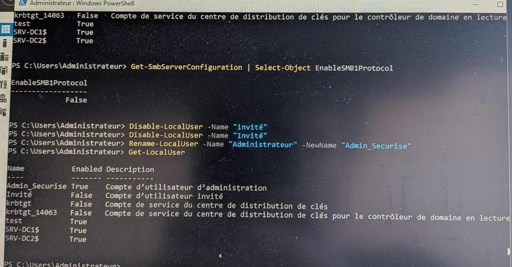

01Contexte et méthode
Un poste Windows sorti de l'usine laisse des portes ouvertes : comptes standards actifs, mots de passe courts, protocoles obsolètes. La consigne est de durcir le poste sur une VM restaurable (snapshot T0), sans jamais se couper l'accès.
La méthode suit trois temps : audit initial → mesures justifiées → contre-audit. Chaque mesure est prouvée par une capture.
02Étapes de réalisation
- Audit initial
Relevé des ports en écoute, des services en cours d'exécution, des comptes locaux et de la configuration SMB. Constat : les comptes Administrateur et Invité sont actifs, ce qui en fait des cibles faciles pour une attaque par force brute.
PowerShell · auditnetstat -ano Get-Service | Where-Object { $_.Status -eq "Running" } Get-LocalUser Get-SmbServerConfiguration | Select-Object EnableSMB1Protocol - Gestion des comptes
Désactivation du compte Invité et renommage du compte administrateur, pour compliquer les attaques qui ciblent les noms de comptes standards.
PowerShell · comptesDisable-LocalUser -Name "Invité" Rename-LocalUser -Name "Administrateur" -NewName "Admin_Securise"
FIG. 1Compte Invité désactivé (False), administrateur renommé en Admin_Securise. - Mots de passe et verrouillage
Stratégie de mots de passe portée aux valeurs CIS niveau 1, et verrouillage du compte après 5 échecs. Test avec un compte « Testeur » : au 6e mot de passe erroné, le compte est bloqué.
Invite de commandes · verrouillagenet accounts /lockoutwindow:15 /lockoutduration:15 /lockoutthreshold:5 - Protocoles obsolètes
SMBv1 confirmé désactivé. Niveau LAN Manager forcé en NTLMv2 seul (
LmCompatibilityLevel = 3).
FIG. 2SMBv1 à False, puis lecture de LmCompatibilityLeveldans le registre. - LLMNR, exécution automatique et journalisation
LLMNR désactivé par stratégie locale (protection contre l'usurpation de noms), exécution automatique coupée sur tous les lecteurs (infection par clé USB). Journal Sécurité porté à 128 Mo et audit des connexions activé (succès et échecs). Rapport de validation produit avec
gpresult /h.
03Difficultés et solutions
La première lecture de la clé de registre a échoué : Get-ItemProperty renvoyait une erreur de paramètre positionnel, à cause d'une syntaxe incorrecte du chemin et du nom de valeur.
Commande réécrite avec les paramètres nommés -Path et -Name. La valeur LmCompatibilityLevel : 3 s'affiche (fig. 2).
Une mesure mal appliquée (verrouillage, renommage de l'administrateur) peut couper l'accès au poste.
Travail sur une VM avec snapshot T0, une mesure à la fois, et un test immédiat après chaque mesure.
04Contre-audit : avant / après
| Élément | État initial | Après durcissement |
|---|---|---|
| Compte Invité | Activé | Désactivé |
| Compte administrateur | « Administrateur » | Renommé |
| Longueur minimale du mot de passe | 7 caractères | 14 caractères |
| Historique des mots de passe | Non défini | 24 mémorisés |
| Durée de vie maximale | 42 jours | 365 jours |
| Seuil de verrouillage | Non configuré | 5 tentatives, 15 min |
| SMBv1 | Désactivé | Désactivé (confirmé) |
| LAN Manager | Non forcé | NTLMv2 seul |
| LLMNR | Activé | Désactivé |
| Exécution automatique (USB) | Activée | Désactivée |
| Journal Sécurité | Taille par défaut | 128 Mo |
| Audit des connexions | Non configuré | Succès et échecs |
Les mesures couvrent les recommandations ANSSI / CIS niveau 1 pour un poste client : comptes, mots de passe, verrouillage, protocoles obsolètes, LLMNR/AutoRun et journalisation.
05Compétences du référentiel mobilisées
- B1.1Gérer le patrimoine informatiqueExploiter des référentiels et normes (CIS, ANSSI) · Mettre en place les niveaux d'habilitation · Vérifier les règles d'utilisation des ressources
- B1.5Mettre à disposition un service informatiqueTester chaque mesure et livrer un poste conforme